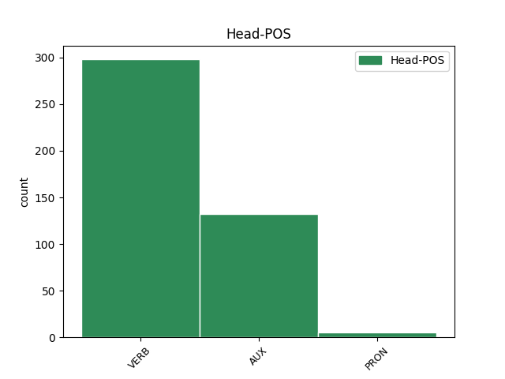
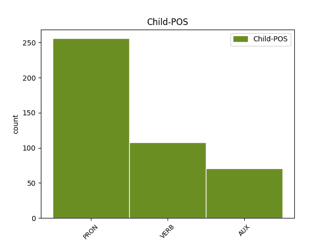

Distribution of features within this leaf


Agreement Rules sorted by frequency.
- When the dependent token is the unk@expl(unk@expl) of the head token,
1 Charlie _ _ _ _ 0 _ _ _
2 Hebdo _ _ _ _ 0 _ _ _
3 in _ _ _ _ 0 _ _ _
4 edicola _ _ _ _ 0 _ _ _
5 insieme _ _ _ _ 0 _ _ _
6 a _ _ _ _ 0 _ _ _
7 il _ _ _ _ 0 _ _ _
8 Fatto _ _ _ _ 0 _ _ _
9 Quotidiano _ _ _ _ 0 _ _ _
10 . _ _ _ _ 0 _ _ _
11 Per _ _ _ _ 0 _ _ _
12 cui _ _ _ _ 0 _ _ _
13 si si PRON PC Clitic=Yes|Person=3|PronType=Prs 14 unk@expl _ _
14 riderà ridere VERB V Mood=Ind|Number=Sing|Person=3|Tense=Fut|VerbForm=Fin 0 _ _ _
15 il _ _ _ _ 0 _ _ _
16 doppio _ _ _ _ 0 _ _ _
17 . _ _ _ _ 0 _ _ _
18 [ _ _ _ _ 0 _ _ _
19 xanax _ _ _ _ 0 _ _ _
20 ] _ _ _ _ 0 _ _ _
1 Ok _ _ _ _ 0 _ _ _
2 @user _ _ _ _ 0 _ _ _
3 ho _ _ _ _ 0 _ _ _
4 capito _ _ _ _ 0 _ _ _
5 torno tornare VERB V Mood=Ind|Number=Sing|Person=1|Tense=Pres|VerbForm=Fin 0 _ _ _
6 a _ _ _ _ 0 _ _ _
7 fare _ _ _ _ 0 _ _ _
8 esami _ _ _ _ 0 _ _ _
9 per _ _ _ _ 0 _ _ _
10 il _ _ _ _ 0 _ _ _
11 debito _ _ _ _ 0 _ _ _
12 , _ _ _ _ 0 _ _ _
13 torno tornare VERB V Mood=Ind|Number=Sing|Person=1|Tense=Pres|VerbForm=Fin 5 conj _ _
14 a _ _ _ _ 0 _ _ _
15 lavorare _ _ _ _ 0 _ _ _
16 che _ _ _ _ 0 _ _ _
17 è _ _ _ _ 0 _ _ _
18 meglio _ _ _ _ 0 _ _ _
19 ! _ _ _ _ 0 _ _ _
20 #labuonascuola _ _ _ _ 0 _ _ _
1 #annuncite _ _ _ _ 0 _ _ _
2 Varata _ _ _ _ 0 _ _ _
3 #labuonascuola _ _ _ _ 0 _ _ _
4 . _ _ _ _ 0 _ _ _
5 gov _ _ _ _ 0 _ _ _
6 per _ _ _ _ 0 _ _ _
7 il _ _ _ _ 0 _ _ _
8 2015 _ _ _ _ 0 _ _ _
9 si _ _ _ _ 0 _ _ _
10 tagliano _ _ _ _ 0 _ _ _
11 148 _ _ _ _ 0 _ _ _
12 milioni _ _ _ _ 0 _ _ _
13 a _ _ _ _ 0 _ _ _
14 la _ _ _ _ 0 _ _ _
15 scuola _ _ _ _ 0 _ _ _
16 pubblica _ _ _ _ 0 _ _ _
17 e _ _ _ _ 0 _ _ _
18 se se PRON PC Clitic=Yes|Person=3|PronType=Prs 20 comp@pass _ _
19 ne _ _ _ _ 0 _ _ _
20 danno dare VERB V Mood=Ind|Number=Plur|Person=3|Tense=Pres|VerbForm=Fin 0 _ _ _
21 200 _ _ _ _ 0 _ _ _
22 a _ _ _ _ 0 _ _ _
23 la _ _ _ _ 0 _ _ _
24 privata _ _ _ _ 0 _ _ _
1 @user1 _ _ _ _ 0 _ _ _
2 @user2 _ _ _ _ 0 _ _ _
3 @user3 _ _ _ _ 0 _ _ _
4 #labuonascuola _ _ _ _ 0 _ _ _
5 siamo essere AUX V Mood=Ind|Number=Plur|Person=1|Tense=Pres|VerbForm=Fin 0 _ _ _
6 noi noi PRON PE Number=Plur|Person=1|PronType=Prs 5 comp:pred _ _
7 docenti _ _ _ _ 0 _ _ _
8 di _ _ _ _ 0 _ _ _
9 le _ _ _ _ 0 _ _ _
10 GI _ _ _ _ 0 _ _ _
11 infetti _ _ _ _ 0 _ _ _
12 da _ _ _ _ 0 _ _ _
13 supplentite _ _ _ _ 0 _ _ _
14 #MIDAperRUOLO _ _ _ _ 0 _ _ _
15 ce _ _ _ _ 0 _ _ _
16 lo _ _ _ _ 0 _ _ _
17 meritiamo _ _ _ _ 0 _ _ _
18 tutti _ _ _ _ 0 _ _ _
19 !! _ _ _ _ 0 _ _ _
1 Dodici _ _ _ _ 0 _ _ _
2 mesi _ _ _ _ 0 _ _ _
3 per _ _ _ _ 0 _ _ _
4 cambiare _ _ _ _ 0 _ _ _
5 la _ _ _ _ 0 _ _ _
6 scuola _ _ _ _ 0 _ _ _
7 ( _ _ _ _ 0 _ _ _
8 #labuonascuola _ _ _ _ 0 _ _ _
9 ) _ _ _ _ 0 _ _ _
10 E _ _ _ _ 0 _ _ _
11 io io PRON PE Number=Sing|Person=1|PronType=Prs 0 _ _ _
12 che _ _ _ _ 0 _ _ _
13 avevo avere AUX VA Mood=Ind|Number=Sing|Person=1|Tense=Imp|VerbForm=Fin 11 mod@relcl _ _
14 prenotato _ _ _ _ 0 _ _ _
15 un _ _ _ _ 0 _ _ _
16 viaggio _ _ _ _ 0 _ _ _
17 intorno _ _ _ _ 0 _ _ _
18 a _ _ _ _ 0 _ _ _
19 il _ _ _ _ 0 _ _ _
20 mondo _ _ _ _ 0 _ _ _
21 di _ _ _ _ 0 _ _ _
22 365 _ _ _ _ 0 _ _ _
23 ... _ _ _ _ 0 _ _ _
24 http://t.co/VYE8FrnSQJ _ _ _ _ 0 _ _ _
1 Governo _ _ _ _ 0 _ _ _
2 Monti _ _ _ _ 0 _ _ _
3 : _ _ _ _ 0 _ _ _
4 Golpe _ _ _ _ 0 _ _ _
5 ? _ _ _ _ 0 _ _ _
6 Alieni _ _ _ _ 0 _ _ _
7 ? _ _ _ _ 0 _ _ _
8 Massoni _ _ _ _ 0 _ _ _
9 ? _ _ _ _ 0 _ _ _
10 : _ _ _ _ 0 _ _ _
11 Il _ _ _ _ 0 _ _ _
12 Tg1 _ _ _ _ 0 _ _ _
13 è essere AUX V Mood=Ind|Number=Sing|Person=3|Tense=Pres|VerbForm=Fin 0 _ _ _
14 attonito _ _ _ _ 0 _ _ _
15 : _ _ _ _ 0 _ _ _
16 ma _ _ _ _ 0 _ _ _
17 chi _ _ _ _ 0 _ _ _
18 sono essere AUX V Mood=Ind|Number=Plur|Person=3|Tense=Pres|VerbForm=Fin 13 parataxis@obj _ _
19 questi _ _ _ _ 0 _ _ _
20 ? _ _ _ _ 0 _ _ _
21 Perché _ _ _ _ 0 _ _ _
22 fra _ _ _ _ 0 _ _ _
23 le _ _ _ _ 0 _ _ _
24 donne _ _ _ _ 0 _ _ _
25 non _ _ _ _ 0 _ _ _
26 ce _ _ _ _ 0 _ _ _
27 n' _ _ _ _ 0 _ _ _
28 è _ _ _ _ 0 _ _ _
29 ne... _ _ _ _ 0 _ _ _
30 http://t.co/0lVOZdTc _ _ _ _ 0 _ _ _
1 * _ _ _ _ 0 _ _ _
2 : _ _ _ _ 0 _ _ _
3 " _ _ _ _ 0 _ _ _
4 Il _ _ _ _ 0 _ _ _
5 governo _ _ _ _ 0 _ _ _
6 Monti _ _ _ _ 0 _ _ _
7 ? _ _ _ _ 0 _ _ _
8 E' essere AUX V Mood=Ind|Number=Sing|Person=3|Tense=Pres|VerbForm=Fin 0 _ _ _
9 in _ _ _ _ 0 _ _ _
10 le _ _ _ _ 0 _ _ _
11 mani _ _ _ _ 0 _ _ _
12 di _ _ _ _ 0 _ _ _
13 Berlusconi _ _ _ _ 0 _ _ _
14 " _ _ _ _ 0 _ _ _
15 , _ _ _ _ 0 _ _ _
16 dicono dire VERB V Mood=Ind|Number=Plur|Person=3|Tense=Pres|VerbForm=Fin 8 parataxis@insert _ _
17 a _ _ _ _ 0 _ _ _
18 il _ _ _ _ 0 _ _ _
19 Pd _ _ _ _ 0 _ _ _
20 http://t.co/i41Ytkl9 _ _ _ _ 0 _ _ _
1 Questa _ _ _ _ 0 _ _ _
2 Roma _ _ _ _ 0 _ _ _
3 niente _ _ _ _ 0 _ _ _
4 male _ _ _ _ 0 _ _ _
5 ci _ _ _ _ 0 _ _ _
6 fa _ _ _ _ 0 _ _ _
7 fare _ _ _ _ 0 _ _ _
8 un _ _ _ _ 0 _ _ _
9 buon _ _ _ _ 0 _ _ _
10 Natale _ _ _ _ 0 _ _ _
11 , _ _ _ _ 0 _ _ _
12 e _ _ _ _ 0 _ _ _
13 chi _ _ _ _ 0 _ _ _
14 invece _ _ _ _ 0 _ _ _
15 non _ _ _ _ 0 _ _ _
16 fa fare VERB V Mood=Ind|Number=Sing|Person=3|Tense=Pres|VerbForm=Fin 0 _ _ _
17 sconti _ _ _ _ 0 _ _ _
18 è essere AUX V Mood=Ind|Number=Sing|Person=3|Tense=Pres|VerbForm=Fin 16 dislocated _ _
19 sto _ _ _ _ 0 _ _ _
20 cazzo _ _ _ _ 0 _ _ _
21 de _ _ _ _ 0 _ _ _
22 Mario _ _ _ _ 0 _ _ _
23 Monti _ _ _ _ 0 _ _ _
24 ! _ _ _ _ 0 _ _ _
1 Berlusconi _ _ _ _ 0 _ _ _
2 dice dire VERB V Mood=Ind|Number=Sing|Person=3|Tense=Pres|VerbForm=Fin 0 _ _ _
3 sì _ _ _ _ 0 _ _ _
4 a _ _ _ _ 0 _ _ _
5 il _ _ _ _ 0 _ _ _
6 governo _ _ _ _ 0 _ _ _
7 Monti _ _ _ _ 0 _ _ _
8 . _ _ _ _ 0 _ _ _
9 di _ _ _ _ 0 _ _ _
10 il _ _ _ _ 0 _ _ _
11 resto _ _ _ _ 0 _ _ _
12 , _ _ _ _ 0 _ _ _
13 è essere AUX V Mood=Ind|Number=Sing|Person=3|Tense=Pres|VerbForm=Fin 2 discourse _ _
14 un' _ _ _ _ 0 _ _ _
15 ammucchiata _ _ _ _ 0 _ _ _
16 . _ _ _ _ 0 _ _ _
17 #fb _ _ _ _ 0 _ _ _
1 Finisce finire VERB V Mood=Ind|Number=Sing|Person=3|Tense=Pres|VerbForm=Fin 0 _ _ _
2 il _ _ _ _ 0 _ _ _
3 precariato _ _ _ _ 0 _ _ _
4 o _ _ _ _ 0 _ _ _
5 inizia _ _ _ _ 0 _ _ _
6 l' _ _ _ _ 0 _ _ _
7 Odissea _ _ _ _ 0 _ _ _
8 ? _ _ _ _ 0 _ _ _
9 #labuonascuola _ _ _ _ 0 _ _ _
10 di _ _ _ _ 0 _ _ _
11 #renzi _ _ _ _ 0 _ _ _
12 è essere AUX V Mood=Ind|Number=Sing|Person=3|Tense=Pres|VerbForm=Fin 1 parataxis@hashtag _ _
13 #lacattivascuola _ _ _ _ 0 _ _ _
14 #passodopopasso _ _ _ _ 0 _ _ _
15 http://t.co/o0U2qywCyp _ _ _ _ 0 _ _ _
1 #FF _ _ _ _ 0 _ _ _
2 @user _ _ _ _ 0 _ _ _
3 : _ _ _ _ 0 _ _ _
4 Oh _ _ _ _ 0 _ _ _
5 che _ _ _ _ 0 _ _ _
6 notizia _ _ _ _ 0 _ _ _
7 , _ _ _ _ 0 _ _ _
8 si _ _ _ _ 0 _ _ _
9 va andare VERB V Mood=Ind|Number=Sing|Person=3|Tense=Pres|VerbForm=Fin 0 _ _ _
10 verso _ _ _ _ 0 _ _ _
11 un _ _ _ _ 0 _ _ _
12 governo _ _ _ _ 0 _ _ _
13 Monti _ _ _ _ 0 _ _ _
14 e _ _ _ _ 0 _ _ _
15 lo _ _ _ _ 0 _ _ _
16 spread _ _ _ _ 0 _ _ _
17 diminuisce _ _ _ _ 0 _ _ _
18 . _ _ _ _ 0 _ _ _
19 Che _ _ _ _ 0 _ _ _
20 sorpresa _ _ _ _ 0 _ _ _
21 ! _ _ _ _ 0 _ _ _
22 E essere VERB V Mood=Ind|Number=Sing|Person=3|Tense=Pres|VerbForm=Fin 9 parataxis@appos _ _
23 proprio _ _ _ _ 0 _ _ _
24 una _ _ _ _ 0 _ _ _
25 cosa _ _ _ _ 0 _ _ _
26 di _ _ _ _ 0 _ _ _
27 cui _ _ _ _ 0 _ _ _
28 gioire _ _ _ _ 0 _ _ _
29 ! _ _ _ _ 0 _ _ _
Disagree Examples:
1 Ragazzi _ _ _ _ 0 _ _ _
2 a _ _ _ _ 0 _ _ _
3 Roma _ _ _ _ 0 _ _ _
4 c' ci PRON PC Clitic=Yes|Number=Plur|Person=1|PronType=Prs 5 unk@expl _ SpaceAfter=No
5 è essere VERB V Mood=Ind|Number=Sing|Person=3|Tense=Pres|VerbForm=Fin 0 _ _ _
6 un _ _ _ _ 0 _ _ _
7 tempo _ _ _ _ 0 _ _ _
8 pessimo _ _ _ _ 0 _ _ _
9 . _ _ _ _ 0 _ _ _
10 Piove _ _ _ _ 0 _ _ _
11 ma _ _ _ _ 0 _ _ _
12 come _ _ _ _ 0 _ _ _
13 piove _ _ _ _ 0 _ _ _
14 . _ _ _ _ 0 _ _ _
15 Il _ _ _ _ 0 _ _ _
16 clima _ _ _ _ 0 _ _ _
17 è _ _ _ _ 0 _ _ _
18 in _ _ _ _ 0 _ _ _
19 linea _ _ _ _ 0 _ _ _
20 con _ _ _ _ 0 _ _ _
21 il _ _ _ _ 0 _ _ _
22 governo _ _ _ _ 0 _ _ _
23 Monti _ _ _ _ 0 _ _ _
24 . _ _ _ _ 0 _ _ _
25 Lacrime _ _ _ _ 0 _ _ _
26 sudore _ _ _ _ 0 _ _ _
27 sangue _ _ _ _ 0 _ _ _
28 e _ _ _ _ 0 _ _ _
29 pure _ _ _ _ 0 _ _ _
30 pioggia _ _ _ _ 0 _ _ _
1 : _ _ _ _ 0 _ _ _
2 abbiamo avere AUX VA Mood=Imp|Number=Plur|Person=1|Tense=Pres|VerbForm=Fin 0 _ _ _
3 voluto _ _ _ _ 0 _ _ _
4 la _ _ _ _ 0 _ _ _
5 bicicletta _ _ _ _ 0 _ _ _
6 ( _ _ _ _ 0 _ _ _
7 il _ _ _ _ 0 _ _ _
8 Governo _ _ _ _ 0 _ _ _
9 Monti _ _ _ _ 0 _ _ _
10 ) _ _ _ _ 0 _ _ _
11 , _ _ _ _ 0 _ _ _
12 ed _ _ _ _ 0 _ _ _
13 ora _ _ _ _ 0 _ _ _
14 si _ _ _ _ 0 _ _ _
15 deve dovere AUX VM Mood=Ind|Number=Sing|Person=3|Tense=Pres|VerbForm=Fin 2 conj _ _
16 pedalare _ _ _ _ 0 _ _ _
17 ... _ _ _ _ 0 _ _ _
1 Il _ _ _ _ 0 _ _ _
2 #Terzopolo _ _ _ _ 0 _ _ _
3 sembra _ _ _ _ 0 _ _ _
4 l' _ _ _ _ 0 _ _ _
5 armata _ _ _ _ 0 _ _ _
6 brancaleone _ _ _ _ 0 _ _ _
7 . _ _ _ _ 0 _ _ _
8 Armiamo armare VERB V Mood=Imp|Number=Plur|Person=1|Tense=Pres|VerbForm=Fin 0 _ _ _
9 ci _ _ _ _ 0 _ _ _
10 e _ _ _ _ 0 _ _ _
11 partite partire VERB V Mood=Imp|Number=Plur|Person=2|Tense=Pres|VerbForm=Fin 8 conj _ SpaceAfter=No
12 ! _ _ _ _ 0 _ _ _
13 #governo _ _ _ _ 0 _ _ _
14 #monti _ _ _ _ 0 _ _ _
15 #oramonti _ _ _ _ 0 _ _ _
16 #pdl _ _ _ _ 0 _ _ _
17 #pd _ _ _ _ 0 _ _ _
18 #udc _ _ _ _ 0 _ _ _
19 #idv _ _ _ _ 0 _ _ _
1 Su _ _ _ _ 0 _ _ _
2 Rete _ _ _ _ 0 _ _ _
3 4 _ _ _ _ 0 _ _ _
4 c' ci PRON PC Clitic=Yes|Number=Plur|Person=1|PronType=Prs 5 unk@expl _ SpaceAfter=No
5 è essere VERB V Mood=Ind|Number=Sing|Person=3|Tense=Pres|VerbForm=Fin 0 _ _ _
6 La _ _ _ _ 0 _ _ _
7 Stangata _ _ _ _ 0 _ _ _
8 . _ _ _ _ 0 _ _ _
9 Quella _ _ _ _ 0 _ _ _
10 vera _ _ _ _ 0 _ _ _
11 , _ _ _ _ 0 _ _ _
12 non _ _ _ _ 0 _ _ _
13 quella _ _ _ _ 0 _ _ _
14 di _ _ _ _ 0 _ _ _
15 Mario _ _ _ _ 0 _ _ _
16 Monti _ _ _ _ 0 _ _ _
17 . _ _ _ _ 0 _ _ _
1 Passera _ _ _ _ 0 _ _ _
2 in _ _ _ _ 0 _ _ _
3 il _ _ _ _ 0 _ _ _
4 governo _ _ _ _ 0 _ _ _
5 Monti _ _ _ _ 0 _ _ _
6 ? _ _ _ _ 0 _ _ _
7 E _ _ _ _ 0 _ _ _
8 dov' _ _ _ _ 0 _ _ _
9 è _ _ _ _ 0 _ _ _
10 la _ _ _ _ 0 _ _ _
11 novità _ _ _ _ 0 _ _ _
12 ? _ _ _ _ 0 _ _ _
13 In _ _ _ _ 0 _ _ _
14 il _ _ _ _ 0 _ _ _
15 governo _ _ _ _ 0 _ _ _
16 nanico _ _ _ _ 0 _ _ _
17 di _ _ _ _ 0 _ _ _
18 passera _ _ _ _ 0 _ _ _
19 ce ce PRON PC Clitic=Yes|Number=Plur|Person=1|PronType=Prs 21 unk@expl _ _
20 n' _ _ _ _ 0 _ _ _
21 era essere VERB V Mood=Ind|Number=Sing|Person=3|Tense=Imp|VerbForm=Fin 0 _ _ _
22 a _ _ _ _ 0 _ _ _
23 quintali _ _ _ _ 0 _ _ _
24 ! _ _ _ _ 0 _ _ _